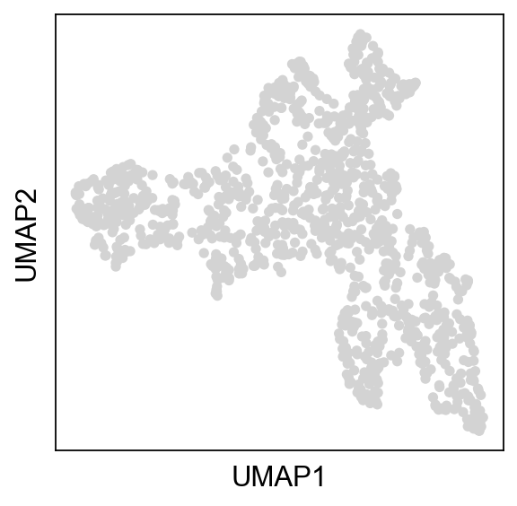
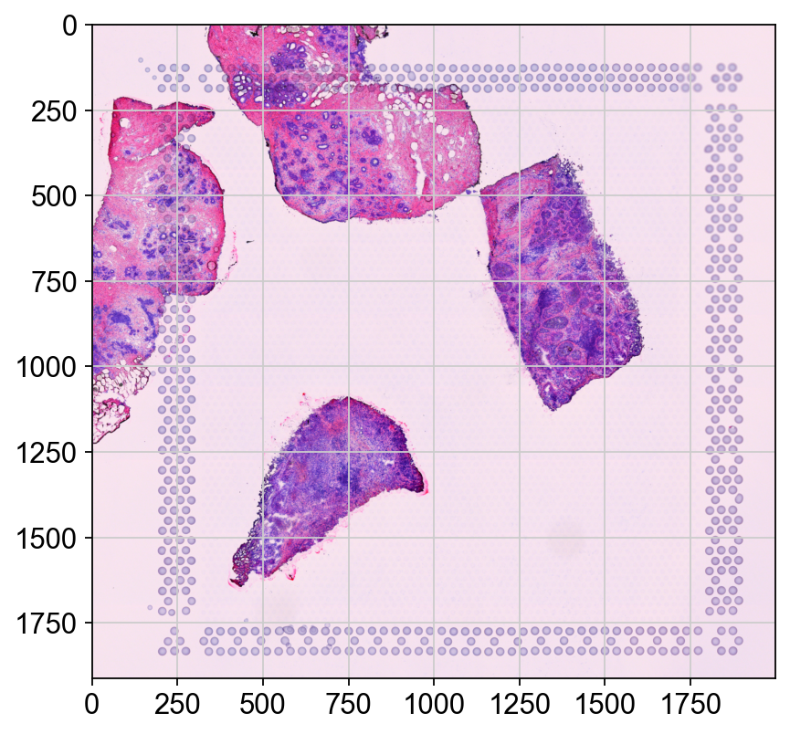
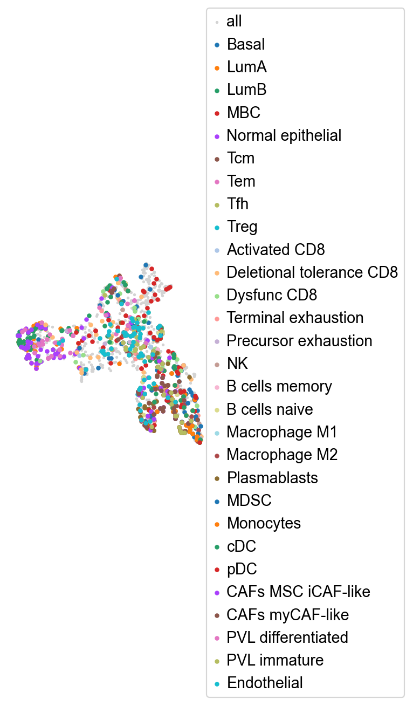
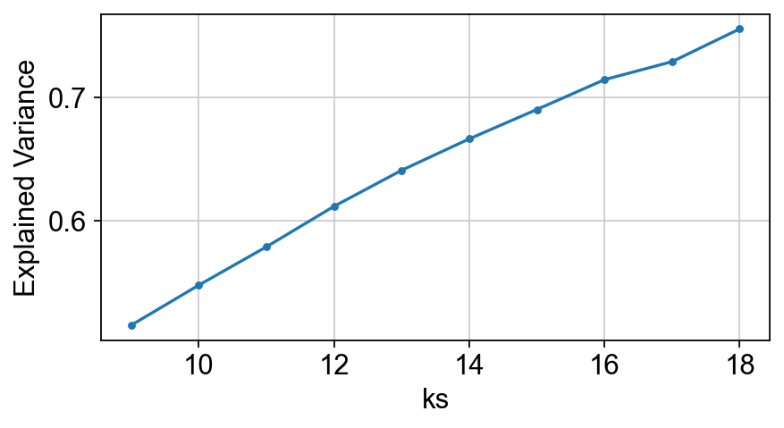
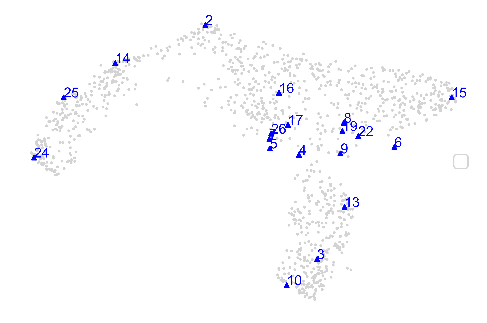
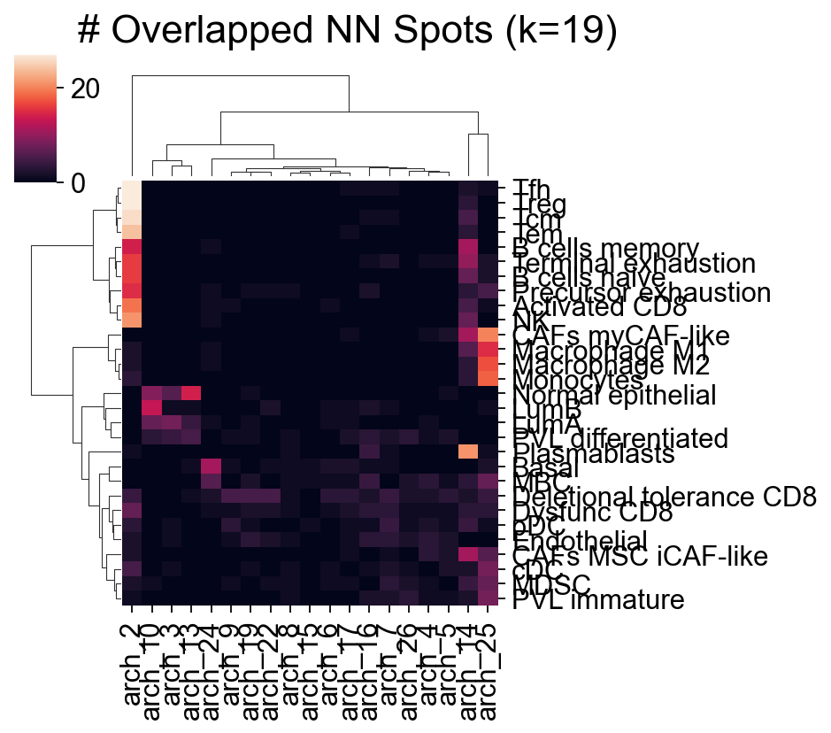
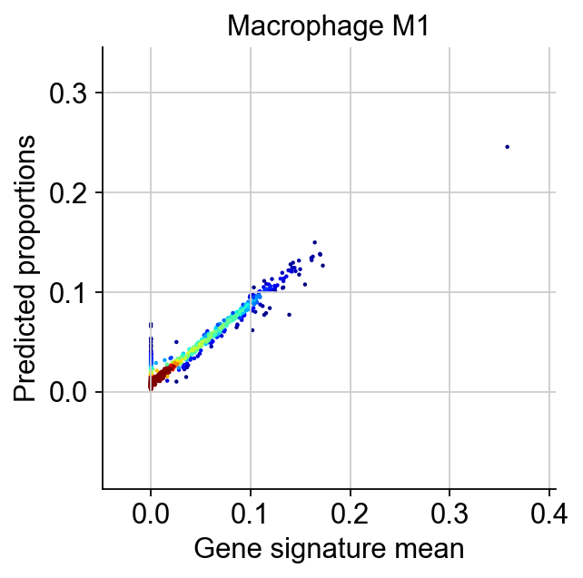

Spatial deconvolution without reference scRNA-seq¶
This is a tutorial on an example real Spatial Transcriptomics (ST) data (CID44971_TNBC) from Wu et al., 2021. Raw tutorial could be found in https://starfysh.readthedocs.io/en/latest/notebooks/Starfysh_tutorial_real.html
Starfysh performs cell-type deconvolution followed by various downstream analyses to discover spatial interactions in tumor microenvironment. Specifically, Starfysh looks for anchor spots (presumably with the highest compositions of one given cell type) informed by user-provided gene signatures (see example) as priors to guide the deconvolution inference, which further enables downstream analyses such as sample integration, spatial hub characterization, cell-cell interactions, etc. This tutorial focuses on the deconvolution task. Overall, Starfysh provides the following options:
At omicverse, we have made the following improvements:
Easier visualization, you can use omicverse unified visualization for scientific mapping
Reduce installation dependency errors, we optimized the automatic selection of different packages, you don’t need to install too many extra packages and cause conflicts.
Base feature:
Spot-level deconvolution with expected cell types and corresponding annotated signature gene sets (default)
Optional:
Archetypal Analysis (AA):
If gene signatures are not provided
Unsupervised cell type annotation
If gene signatures are provided but require refinement:
Novel cell type / cell state discovery (complementary to known cell types from the signatures)
Refine known marker genes by appending archetype-specific differentially expressed genes, and update anchor spots accordingly
Product-of-Experts (PoE) integration
Multi-modal integrative predictions with expression & histology image by leverging additional side information (e.g. cell density) from H&E image.
He, S., Jin, Y., Nazaret, A. et al. Starfysh integrates spatial transcriptomic and histologic data to reveal heterogeneous tumor–immune hubs. Nat Biotechnol (2024). https://doi.org/10.1038/s41587-024-02173-8
import scanpy as sc
import omicverse as ov
ov.plot_set()
____ _ _ __
/ __ \____ ___ (_)___| | / /__ _____________
/ / / / __ `__ \/ / ___/ | / / _ \/ ___/ ___/ _ \
/ /_/ / / / / / / / /__ | |/ / __/ / (__ ) __/
\____/_/ /_/ /_/_/\___/ |___/\___/_/ /____/\___/
Version: 1.6.6, Tutorials: https://omicverse.readthedocs.io/
All dependencies are satisfied.
from omicverse.external.starfysh import (AA, utils, plot_utils, post_analysis)
from omicverse.external.starfysh import _starfysh as sf_model
(1). load data and marker genes¶
File Input:
Spatial transcriptomics
Count matrix:
adata(Optional): Paired histology & spot coordinates:
img,map_info
Annotated signatures (marker genes) for potential cell types:
gene_sig
Starfysh is built upon scanpy and Anndata. The common ST/Visium data sample folder consists a expression count file (usually filtered_featyur_bc_matrix.h5), and a subdirectory with corresponding H&E image and spatial information, as provided by Visium platform.
For example, our example real ST data has the following structure:
├── data_folder
signature.csv
├── CID44971:
\__ filtered_feature_bc_mactrix.h5
├── spatial:
\__ aligned_fiducials.jpg
detected_tissue_image.jpg
scalefactors_json.json
tissue_hires_image.png
tissue_lowres_image.png
tissue_positions_list.csv
For data that doesn’t follow the common visium data structure (e.g. missing filtered_featyur_bc_matrix.h5 or the given .h5ad count matrix file lacks spatial metadata), please construct the data as Anndata synthesizing information as the example simulated data shows:
[Note]: If you’re running this tutorial locally, please download the sample data and signature gene sets, and save it in the relative path data/star_data (otherwise please modify the data_path defined in the cell below):
# Specify data paths
data_path = 'data/star_data'
sample_id = 'CID44971_TNBC'
sig_name = 'bc_signatures_version_1013.csv'
# Load expression counts and signature gene sets
adata, adata_normed = utils.load_adata(data_folder=data_path,
sample_id=sample_id, # sample id
n_genes=2000 # number of highly variable genes to keep
)
filtered out 269 genes that are detected in less than 1 cells
normalizing counts per cell
finished (0:00:00)
extracting highly variable genes
finished (0:00:00)
--> added
'highly_variable', boolean vector (adata.var)
'means', float vector (adata.var)
'dispersions', float vector (adata.var)
'dispersions_norm', float vector (adata.var)
import pandas as pd
import os
gene_sig = pd.read_csv(os.path.join(data_path, sig_name))
gene_sig = utils.filter_gene_sig(gene_sig, adata.to_df())
gene_sig.head()
| Basal | LumA | LumB | MBC | Normal epithelial | Tcm | Tem | Tfh | Treg | Activated CD8 | ... | Plasmablasts | MDSC | Monocytes | cDC | pDC | CAFs MSC iCAF-like | CAFs myCAF-like | PVL differentiated | PVL immature | Endothelial | |
|---|---|---|---|---|---|---|---|---|---|---|---|---|---|---|---|---|---|---|---|---|---|
| 0 | EMP1 | SH3BGRL | UGCG | COL11A2 | KRT14 | CCR7 | IL7R | CXCL13 | TNFRSF4 | CD69 | ... | IGKV3-15 | ITGAM | LYZ | CD80 | IL3RA | APOD | COL1A1 | ACTA2 | CCL19 | ACKR1 |
| 1 | TAGLN | HSPB1 | ARMT1 | SDC1 | KRT17 | LTB | ANXA1 | NMB | LTB | CCR7 | ... | IGHG1 | CD33 | IL1B | CD86 | LILRA4 | DCN | COL1A2 | TAGLN | RGS5 | FABP4 |
| 2 | TTYH1 | PHGR1 | ISOC1 | FBN2 | LTF | IL7R | CXCR4 | NR3C1 | IL32 | CD27 | ... | IGKV1-5 | ARG1 | G0S2 | CCR7 | CD123 | PTGDS | COL3A1 | MYL9 | IGFBP7 | PLVAP |
| 3 | RTN4 | SOX9 | GDF15 | MMP1 | KRT15 | SARAF | KLRB1 | DUSP4 | BATF | BTLA | ... | IGKV3-20 | NOS2 | TYROBP | CD1A | TCF4 | CFD | LUM | TPM2 | NDUFA4L2 | RAMP2 |
| 4 | TK1 | CEBPD | ZFP36 | FABP5 | PTN | SELL | TNFAIP3 | TNFRSF18 | FOXP3 | CD40LG | ... | IGKV3-11 | CD68 | FCN1 | CD1C | IRF7 | LUM | SFRP2 | NDUFA4L2 | CCL2 | VWF |
5 rows × 29 columns
If there’s no input signature gene sets, Starfysh defines “archetypal marker genes” as signatures. Please refer to the following code snippet and see details in section (3).
aa_model = AA.ArchetypalAnalysis(adata_orig=adata_normed)
archetype, arche_dict, major_idx, evs = aa_model.compute_archetypes(r=40)
gene_sig = aa_model.find_markers(n_markers=30, display=False)
gene_sig = utils.filter_gene_sig(gene_sig, adata.to_df())
gene_sig.head()
# Load spatial information
img_metadata = utils.preprocess_img(data_path,
sample_id,
adata_index=adata.obs.index,
#hchannel=False
)
img, map_info, scalefactor = img_metadata['img'], img_metadata['map_info'], img_metadata['scalefactor']
umap_df = utils.get_umap(adata, display=True)
computing PCA
with n_comps=50
finished (0:00:00)
computing neighbors
using 'X_pca' with n_pcs = 40
finished: added to `.uns['neighbors']`
`.obsp['distances']`, distances for each pair of neighbors
`.obsp['connectivities']`, weighted adjacency matrix (0:00:05)
computing UMAP
finished: added
'X_umap', UMAP coordinates (adata.obsm) (0:00:01)
{kind=link}

import matplotlib.pyplot as plt
plt.figure(figsize=(6, 6), dpi=80)
plt.imshow(img)
<matplotlib.image.AxesImage at 0x7fcdb1856740>
{kind=link}

map_info.head()
| array_row | array_col | imagerow | imagecol | sample | |
|---|---|---|---|---|---|
| AACATTGGTCAGCCGT-1 | 3 | 17 | 1361 | 2511 | CID44971_TNBC |
| CATCGAATGGATCTCT-1 | 3 | 19 | 1361 | 2620 | CID44971_TNBC |
| CGGGTTGTAGCTTTGG-1 | 3 | 21 | 1361 | 2730 | CID44971_TNBC |
| CCTAAGTGTCTAACCG-1 | 2 | 22 | 1266 | 2784 | CID44971_TNBC |
| TCTGTGACTGACCGTT-1 | 3 | 23 | 1361 | 2839 | CID44971_TNBC |
(2). Preprocessing (finding anchor spots)¶
Identify anchor spot locations.
Instantiate parameters for Starfysh model training:
Raw & normalized counts after taking highly variable genes
filtered signature genes
library size & spatial smoothed library size (log-transformed)
Anchor spot indices (
anchors_df) for each cell type & their signature means (sig_means)
# Parameters for training
visium_args = utils.VisiumArguments(adata,
adata_normed,
gene_sig,
img_metadata,
n_anchors=60,
window_size=3,
sample_id=sample_id
)
adata, adata_normed = visium_args.get_adata()
anchors_df = visium_args.get_anchors()
adata.obs['log library size']=visium_args.log_lib
adata.obs['windowed log library size']=visium_args.win_loglib
sc.pl.spatial(adata, cmap='magma',
# show first 8 cell types
color='log library size',
ncols=4, size=1.3,
img_key='hires',
#palette=Layer_color
# limit color scale at 99.2% quantile of cell abundance
#vmin=0, vmax='p99.2'
)
{kind=link}
sc.pl.spatial(adata, cmap='magma',
# show first 8 cell types
color='windowed log library size',
ncols=4, size=1.3,
img_key='hires',
#palette=Layer_color
# limit color scale at 99.2% quantile of cell abundance
#vmin=0, vmax='p99.2'
)
{kind=link}
plot raw gene expression:
sc.pl.spatial(adata, cmap='magma',
# show first 8 cell types
color='IL7R',
ncols=4, size=1.3,
img_key='hires',
#palette=Layer_color
# limit color scale at 99.2% quantile of cell abundance
#vmin=0, vmax='p99.2'
)
{kind=link}
plot_utils.plot_anchor_spots(umap_df,
visium_args.pure_spots,
visium_args.sig_mean,
bbox_x=2
)
<AxesSubplot: >
{kind=link}

(3). Optional: Archetypal Analysis¶
Overview: If users don’t provide annotated gene signature sets with cell types, Starfysh identifies candidates for cell types via archetypal analysis (AA). The underlying assumption is that the geometric “extremes” are identified as the purest cell types, whereas all other spots are mixture of the “archetypes”. If the users provide the gene signature sets, they can still optionally apply AA to refine marker genes and update anchor spots for known cell types. In addition, AA can identify & assign potential novel cell types / states. Here are the features provided by the optional archetypal analysis:
Finding archetypal spots & assign 1-1 mapping to their closest anchor spot neighbors
Finding archetypal marker genes & append them to marker genes of annotated cell types
Assigning novel cell type / cell states as the most distant archetypes
Overall, Starfysh provides the archetypal analysis as a complementary toolkit for automatic cell-type annotation & signature gene completion:
If signature genes aren’t provided:
Archetypal analysis defines the geometric extrema of the data as major cell types with corresponding marker genes.If complete signature genes are known:
Users can skip this section and use only the signature priorsIf signature genes are incomplete or need refinement:
Archetypal analysis can be applied to a. Refine signatures of certain cell types b. Find novel cell types / states that haven’t been provided from the input signature
If signature genes aren’t provided¶
Note:
Intrinsic Dimension (ID) estimator is implemented to estimate the lower-bound for the number of archetypes \(k\), followed by elbow method with iterations to identify the optimal \(k\). By default, a conditional number is set as 30; if you believe there are potentially more / fewer cell types, please increase / decrease
cnaccordingly.
Major cell types & corresponding markers are represented by the inferred archetypes:
aa_model = AA.ArchetypalAnalysis(adata_orig=adata_normed)
archetype, arche_dict, major_idx, evs = aa_model.compute_archetypes(r=40)
# (1). Find archetypal spots & archetypal clusters
arche_df = aa_model.find_archetypal_spots(major=True)
# (2). Define "signature genes" as marker genes associated with each archetypal cluster
gene_sig = aa_model.find_markers(n_markers=30, display=False)
gene_sig.head()
If complete signature genes are known¶
Users can skip th section & run Starfysh
If signature genes are incomplete or require refinement¶
In this tutorial, we’ll show an example of applying best-aligned archetypes to existing anchors of given cell type(s) to append signature genes.
aa_model = AA.ArchetypalAnalysis(adata_orig=adata_normed)
archetype, arche_dict, major_idx, evs = aa_model.compute_archetypes(cn=40)
# (1). Find archetypal spots & archetypal clusters
arche_df = aa_model.find_archetypal_spots(major=True)
# (2). Find marker genes associated with each archetypal cluster
markers_df = aa_model.find_markers(n_markers=30, display=False)
# (3). Map archetypes to closest anchors (1-1 per cell type)
map_df, map_dict = aa_model.assign_archetypes(anchors_df)
# (4). Optional: Find the most distant archetypes that are not assigned to any annotated cell types
distant_arches = aa_model.find_distant_archetypes(anchors_df, n=3)
plot_utils.plot_evs(evs, kmin=aa_model.kmin)
<AxesSubplot: xlabel='ks', ylabel='Explained Variance'>
{kind=link}

Visualize archetypes
aa_model.plot_archetypes(do_3d=False, major=True, disp_cluster=False)
(<Figure size 1800x1200 with 1 Axes>, <AxesSubplot: >)
{kind=link}

Visualize archetypal - cell type mapping:
aa_model.plot_mapping(map_df)
<seaborn.matrix.ClusterGrid at 0x7fcdb0d84ca0>
{kind=link}

Application: appending marker genes Append archetypal marker genes with the best-aligned anchors:
visium_args = utils.refine_anchors(
visium_args,
aa_model,
#thld=0.7, # alignment threshold
n_genes=5,
#n_iters=1
)
# Get updated adata & signatures
adata, adata_normed = visium_args.get_adata()
gene_sig = visium_args.gene_sig
cell_types = gene_sig.columns
Run starfysh without histology integration¶
We perform n_repeat random restarts and select the best model with lowest loss for parameter c (inferred cell-type proportions):
(1). Model parameters¶
import torch
n_repeats = 3
epochs = 200
patience = 50
device = torch.device('cuda' if torch.cuda.is_available() else 'cpu')
(2). Model training¶
Users can choose to run the one of the following Starfysh model without/with histology integration:
Without histology integration: setting utils.run_starfysh(poe=False) (default)
With histology integration: setting utils.run_starfysh(poe=True)
# Run models
model, loss = utils.run_starfysh(visium_args,
n_repeats=n_repeats,
epochs=epochs,
#patience=patience,
device=device
)
Epoch[10/200], train_loss: 3490.9582, train_reconst: 3221.3334, train_u: 17.9938,train_z: 25.6617,train_c: 199.7520,train_l: 26.2174
Epoch[20/200], train_loss: 2108.3944, train_reconst: 1894.7217, train_u: 17.9194,train_z: 23.3753,train_c: 169.5878,train_l: 2.7902
Epoch[30/200], train_loss: 1765.6603, train_reconst: 1570.7852, train_u: 17.8466,train_z: 21.6337,train_c: 154.2738,train_l: 1.1209
Epoch[40/200], train_loss: 1733.2109, train_reconst: 1546.0455, train_u: 17.7864,train_z: 20.0372,train_c: 147.9223,train_l: 1.4195
Epoch[50/200], train_loss: 1715.3109, train_reconst: 1532.1562, train_u: 17.7368,train_z: 19.2974,train_c: 144.5076,train_l: 1.6129
Epoch[60/200], train_loss: 1698.8605, train_reconst: 1519.2789, train_u: 17.6968,train_z: 18.9038,train_c: 141.2221,train_l: 1.7591
Epoch[70/200], train_loss: 1686.9498, train_reconst: 1508.5263, train_u: 17.6644,train_z: 18.8268,train_c: 140.0840,train_l: 1.8483
Epoch[80/200], train_loss: 1674.9727, train_reconst: 1497.4797, train_u: 17.6380,train_z: 18.5378,train_c: 139.3780,train_l: 1.9392
Epoch[90/200], train_loss: 1666.4966, train_reconst: 1490.2158, train_u: 17.6150,train_z: 18.3807,train_c: 138.2688,train_l: 2.0163
Epoch[100/200], train_loss: 1668.7559, train_reconst: 1493.4065, train_u: 17.5971,train_z: 18.1943,train_c: 137.4736,train_l: 2.0844
Epoch[110/200], train_loss: 1662.3459, train_reconst: 1488.1466, train_u: 17.5824,train_z: 17.7968,train_c: 136.6870,train_l: 2.1330
Epoch[120/200], train_loss: 1660.4514, train_reconst: 1486.6055, train_u: 17.5705,train_z: 17.9425,train_c: 136.1627,train_l: 2.1702
Epoch[130/200], train_loss: 1663.8893, train_reconst: 1489.7117, train_u: 17.5609,train_z: 17.7712,train_c: 136.6321,train_l: 2.2134
Epoch[140/200], train_loss: 1662.0375, train_reconst: 1487.8504, train_u: 17.5531,train_z: 18.0914,train_c: 136.2991,train_l: 2.2435
Epoch[150/200], train_loss: 1657.0409, train_reconst: 1483.5592, train_u: 17.5466,train_z: 17.6962,train_c: 135.9730,train_l: 2.2660
Epoch[160/200], train_loss: 1659.4122, train_reconst: 1485.7647, train_u: 17.5412,train_z: 17.7207,train_c: 136.0941,train_l: 2.2916
Epoch[170/200], train_loss: 1654.4409, train_reconst: 1481.7205, train_u: 17.5370,train_z: 17.6184,train_c: 135.2536,train_l: 2.3115
Epoch[180/200], train_loss: 1656.3850, train_reconst: 1483.2924, train_u: 17.5335,train_z: 17.6977,train_c: 135.5281,train_l: 2.3333
Epoch[190/200], train_loss: 1658.1092, train_reconst: 1484.6301, train_u: 17.5306,train_z: 17.5962,train_c: 136.0102,train_l: 2.3421
Epoch[200/200], train_loss: 1658.3536, train_reconst: 1484.1678, train_u: 17.5282,train_z: 17.6687,train_c: 136.6331,train_l: 2.3558
Epoch[10/200], train_loss: 3490.9582, train_reconst: 3221.3334, train_u: 17.9938,train_z: 25.6617,train_c: 199.7520,train_l: 26.2174
Epoch[20/200], train_loss: 2108.3944, train_reconst: 1894.7217, train_u: 17.9194,train_z: 23.3753,train_c: 169.5878,train_l: 2.7902
Epoch[30/200], train_loss: 1765.6603, train_reconst: 1570.7852, train_u: 17.8466,train_z: 21.6337,train_c: 154.2738,train_l: 1.1209
Epoch[40/200], train_loss: 1733.2109, train_reconst: 1546.0455, train_u: 17.7864,train_z: 20.0372,train_c: 147.9223,train_l: 1.4195
Epoch[50/200], train_loss: 1715.3109, train_reconst: 1532.1562, train_u: 17.7368,train_z: 19.2974,train_c: 144.5076,train_l: 1.6129
Epoch[60/200], train_loss: 1698.8605, train_reconst: 1519.2789, train_u: 17.6968,train_z: 18.9038,train_c: 141.2221,train_l: 1.7591
Epoch[70/200], train_loss: 1686.9498, train_reconst: 1508.5263, train_u: 17.6644,train_z: 18.8268,train_c: 140.0840,train_l: 1.8483
Epoch[80/200], train_loss: 1674.9727, train_reconst: 1497.4797, train_u: 17.6380,train_z: 18.5378,train_c: 139.3780,train_l: 1.9392
Epoch[90/200], train_loss: 1666.4966, train_reconst: 1490.2158, train_u: 17.6150,train_z: 18.3807,train_c: 138.2688,train_l: 2.0163
Epoch[100/200], train_loss: 1668.7559, train_reconst: 1493.4065, train_u: 17.5971,train_z: 18.1943,train_c: 137.4736,train_l: 2.0844
Epoch[110/200], train_loss: 1662.3459, train_reconst: 1488.1466, train_u: 17.5824,train_z: 17.7968,train_c: 136.6870,train_l: 2.1330
Epoch[120/200], train_loss: 1660.4514, train_reconst: 1486.6055, train_u: 17.5705,train_z: 17.9425,train_c: 136.1627,train_l: 2.1702
Epoch[130/200], train_loss: 1663.8893, train_reconst: 1489.7117, train_u: 17.5609,train_z: 17.7712,train_c: 136.6321,train_l: 2.2134
Epoch[140/200], train_loss: 1662.0375, train_reconst: 1487.8504, train_u: 17.5531,train_z: 18.0914,train_c: 136.2991,train_l: 2.2435
Epoch[150/200], train_loss: 1657.0409, train_reconst: 1483.5592, train_u: 17.5466,train_z: 17.6962,train_c: 135.9730,train_l: 2.2660
Epoch[160/200], train_loss: 1659.4122, train_reconst: 1485.7647, train_u: 17.5412,train_z: 17.7207,train_c: 136.0941,train_l: 2.2916
Epoch[170/200], train_loss: 1654.4409, train_reconst: 1481.7205, train_u: 17.5370,train_z: 17.6184,train_c: 135.2536,train_l: 2.3115
Epoch[180/200], train_loss: 1656.3850, train_reconst: 1483.2924, train_u: 17.5335,train_z: 17.6977,train_c: 135.5281,train_l: 2.3333
Epoch[190/200], train_loss: 1658.1092, train_reconst: 1484.6301, train_u: 17.5306,train_z: 17.5962,train_c: 136.0102,train_l: 2.3421
Epoch[200/200], train_loss: 1658.3536, train_reconst: 1484.1678, train_u: 17.5282,train_z: 17.6687,train_c: 136.6331,train_l: 2.3558
Epoch[10/200], train_loss: 3490.9582, train_reconst: 3221.3334, train_u: 17.9938,train_z: 25.6617,train_c: 199.7520,train_l: 26.2174
Epoch[20/200], train_loss: 2108.3944, train_reconst: 1894.7217, train_u: 17.9194,train_z: 23.3753,train_c: 169.5878,train_l: 2.7902
Epoch[30/200], train_loss: 1765.6603, train_reconst: 1570.7852, train_u: 17.8466,train_z: 21.6337,train_c: 154.2738,train_l: 1.1209
Epoch[40/200], train_loss: 1733.2109, train_reconst: 1546.0455, train_u: 17.7864,train_z: 20.0372,train_c: 147.9223,train_l: 1.4195
Epoch[50/200], train_loss: 1715.3109, train_reconst: 1532.1562, train_u: 17.7368,train_z: 19.2974,train_c: 144.5076,train_l: 1.6129
Epoch[60/200], train_loss: 1698.8605, train_reconst: 1519.2789, train_u: 17.6968,train_z: 18.9038,train_c: 141.2221,train_l: 1.7591
Epoch[70/200], train_loss: 1686.9498, train_reconst: 1508.5263, train_u: 17.6644,train_z: 18.8268,train_c: 140.0840,train_l: 1.8483
Epoch[80/200], train_loss: 1674.9727, train_reconst: 1497.4797, train_u: 17.6380,train_z: 18.5378,train_c: 139.3780,train_l: 1.9392
Epoch[90/200], train_loss: 1666.4966, train_reconst: 1490.2158, train_u: 17.6150,train_z: 18.3807,train_c: 138.2688,train_l: 2.0163
Epoch[100/200], train_loss: 1668.7559, train_reconst: 1493.4065, train_u: 17.5971,train_z: 18.1943,train_c: 137.4736,train_l: 2.0844
Epoch[110/200], train_loss: 1662.3459, train_reconst: 1488.1466, train_u: 17.5824,train_z: 17.7968,train_c: 136.6870,train_l: 2.1330
Epoch[120/200], train_loss: 1660.4514, train_reconst: 1486.6055, train_u: 17.5705,train_z: 17.9425,train_c: 136.1627,train_l: 2.1702
Epoch[130/200], train_loss: 1663.8893, train_reconst: 1489.7117, train_u: 17.5609,train_z: 17.7712,train_c: 136.6321,train_l: 2.2134
Epoch[140/200], train_loss: 1662.0375, train_reconst: 1487.8504, train_u: 17.5531,train_z: 18.0914,train_c: 136.2991,train_l: 2.2435
Epoch[150/200], train_loss: 1657.0409, train_reconst: 1483.5592, train_u: 17.5466,train_z: 17.6962,train_c: 135.9730,train_l: 2.2660
Epoch[160/200], train_loss: 1659.4122, train_reconst: 1485.7647, train_u: 17.5412,train_z: 17.7207,train_c: 136.0941,train_l: 2.2916
Epoch[170/200], train_loss: 1654.4409, train_reconst: 1481.7205, train_u: 17.5370,train_z: 17.6184,train_c: 135.2536,train_l: 2.3115
Epoch[180/200], train_loss: 1656.3850, train_reconst: 1483.2924, train_u: 17.5335,train_z: 17.6977,train_c: 135.5281,train_l: 2.3333
Epoch[190/200], train_loss: 1658.1092, train_reconst: 1484.6301, train_u: 17.5306,train_z: 17.5962,train_c: 136.0102,train_l: 2.3421
Epoch[200/200], train_loss: 1658.3536, train_reconst: 1484.1678, train_u: 17.5282,train_z: 17.6687,train_c: 136.6331,train_l: 2.3558
Downstream analysis¶
Parse Starfysh inference output¶
adata, adata_normed = visium_args.get_adata()
inference_outputs, generative_outputs,adata_ = sf_model.model_eval(model,
adata,
visium_args,
poe=False,
device=device)
Visualize starfysh deconvolution results¶
Gene sig mean vs. inferred prop
import numpy as np
n_cell_types = gene_sig.shape[1]
idx = np.random.randint(0, n_cell_types)
post_analysis.gene_mean_vs_inferred_prop(inference_outputs,
visium_args,
idx=idx,
figsize=(4,4)
)
<AxesSubplot: title={'center': 'Macrophage M1'}, xlabel='Gene signature mean', ylabel='Predicted proportions'>
{kind=link}

Spatial visualizations:¶
Inferred density on Spatial map:
plot_utils.pl_spatial_inf_feature(adata_, feature='ql_m', cmap='Blues')
{kind=link}
Inferred cell-type proportions (spatial map):
def cell2proportion(adata):
adata_plot=sc.AnnData(adata.X)
adata_plot.obs=utils.extract_feature(adata_, 'qc_m').obs.copy()
adata_plot.var=adata.var.copy()
adata_plot.obsm=adata.obsm.copy()
adata_plot.obsp=adata.obsp.copy()
adata_plot.uns=adata.uns.copy()
return adata_plot
adata_plot=cell2proportion(adata_)
adata_plot
AnnData object with n_obs × n_vars = 1162 × 2609
obs: 'Basal', 'LumA', 'LumB', 'MBC', 'Normal epithelial', 'Tcm', 'Tem', 'Tfh', 'Treg', 'Activated CD8', 'Deletional tolerance CD8', 'Dysfunc CD8', 'Terminal exhaustion', 'Precursor exhaustion', 'NK', 'B cells memory', 'B cells naive', 'Macrophage M1', 'Macrophage M2', 'Plasmablasts', 'MDSC', 'Monocytes', 'cDC', 'pDC', 'CAFs MSC iCAF-like', 'CAFs myCAF-like', 'PVL differentiated', 'PVL immature', 'Endothelial'
var: 'features', 'highly_variable'
uns: 'pca', 'neighbors', 'umap', 'cell_types', 'spatial', 'qu'
obsm: 'X_pca', 'X_umap', 'spatial', 'px', 'qc_m', 'qc', 'qz_m', 'qz_m_ct', 'qz_logv', 'qz_logv_ct', 'qz', 'ql_m', 'ql_logv', 'ql', 'px_rate', 'pc_p', 'xs_k', 'z_umap'
obsp: 'distances', 'connectivities'
sc.pl.spatial(adata_plot, cmap='Spectral_r',
# show first 8 cell types
color=['Basal','LumA','LumB'],
ncols=4, size=1.3,
img_key='hires',
vmin=0, vmax='p90'
)
{kind=link}
ov.pl.embedding(adata_plot,
basis='z_umap',
color=['Basal', 'LumA', 'MBC', 'Normal epithelial'],
frameon='small',
vmin=0, vmax='p90',
cmap='Spectral_r',
)
{kind=link}
pred_exprs = sf_model.model_ct_exp(model,
adata,
visium_args,
device=device)
Plot spot-level expression (e.g. IL7R from Effector Memory T cells (Tem)):
gene='IL7R'
gene_celltype='Tem'
adata_.layers[f'infer_{gene_celltype}']=pred_exprs[gene_celltype]
sc.pl.spatial(adata_, cmap='Spectral_r',
# show first 8 cell types
color=gene,
title=f'{gene} (Predicted expression)\n{gene_celltype}',
layer=f'infer_{gene_celltype}',
ncols=4, size=1.3,
img_key='hires',
#vmin=0, vmax='p90'
)
{kind=link}
Save model & inferred parameters¶
# Specify output directory
outdir = './results/'
if not os.path.exists(outdir):
os.mkdir(outdir)
# save the model
torch.save(model.state_dict(), os.path.join(outdir, 'starfysh_model.pt'))
# save `adata` object with inferred parameters
adata.write(os.path.join(outdir, 'st.h5ad'))